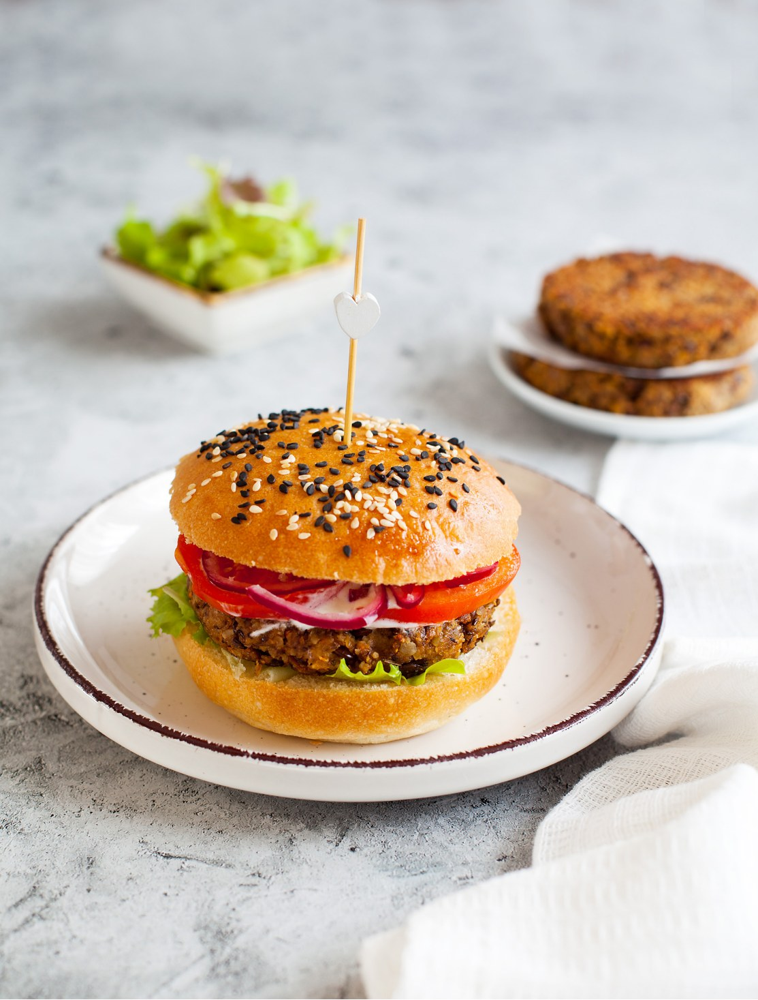

В этом рецепте мы используем зеленую чечевицу, она не требует вымачивания, но при этом не разваривается, как красная, благодаря чему котлеты получаются сочнее и фактурнее. А еще они очень похожи на мясные! Семечки усиливают «ореховость» вкуса чечевицы и также улучшают текстуру котлет. Можно использовать бурую (коричневую) чечевицу, но обратите внимание, что она варится несколько дольше, и ее нужно будет вымочить в течение как минимум 2–3 часов. А чтобы ускорить процесс, вы можете взять готовую, консервированную чечевицу.
Со специями можно поэкспериментировать, например, добавить копченую паприку для придания дымной ноты вкуса или немного кайенского перца для легкой остроты.
Яйца можно заменить болтушкой из измельченного льна с водой (flax egg) для веганского варианта, а панировочную смесь из пшеничного хлеба — измельченными сухарями из безглютенового хлеба.
Если красный лук оказался несладким, горчит, его можно слегка замариновать: нарезать полукольцами, влить немного хорошего уксуса, оставить на 5–10 минут, затем отжать.
В качестве соуса мы рекомендуем йогуртовый. Он идеален не только для шаурмы, но и для вегетарианских бургеров. Можно выбрать томатный соус или использовать в бургере оба соуса. Для бургеров соус потребуется не весь, но готовить из половины банки помидоров нет смысла, соус подойдет для множества других блюд.
Для бургеров лучше делать плоские котлеты. Также можно подавать их в пите — в этом случае сделайте котлеты чуть потолще и меньшего диаметра.
Бонусом к этому рецепту — рецепт булочек для бургеров. Но если не хотите возиться с выпечкой, возьмите качественные покупные.
для томатного соуса:
для йогуртового соуса:
для подачи: